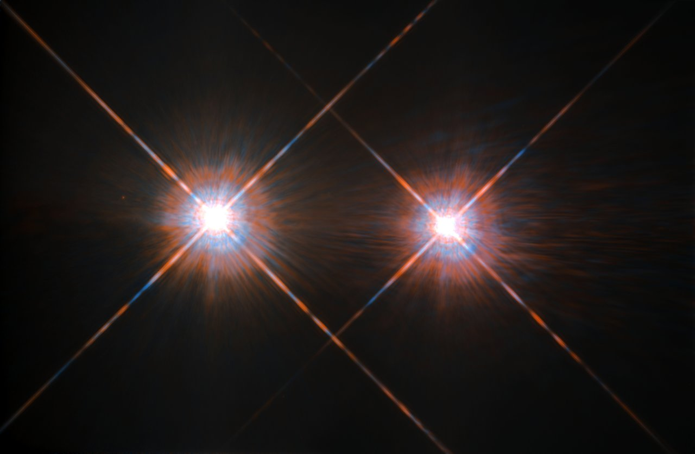

Nearby stars are the stellar objects located within roughly 20 light-years (about 6 parsecs) of the Sun, forming what astronomers call the Sun's immediate stellar neighbourhood. Within this boundary, 131 objects are known in 94 separate systems, ranging from main-sequence stars to white dwarfs, brown dwarfs, and sub-brown dwarfs. The closest individual star to the Sun is Proxima Centauri, at 4.25 light-years, while the nearest stellar system is the Alpha Centauri triple system at 4.34 light-years.

Credit: NASA/ESA, Hubble Space Telescope, Wide-Field and Planetary Camera 2
The solar stellar neighbourhood is notably sparse: stellar systems are separated on average by 4–5 light-years, a stark contrast to the interiors of globular clusters where stellar densities are roughly 500 times higher. The Sun resides within the Local Interstellar Cloud, a warm, low-density structure some 30 light-years across, which is itself embedded within the Local Bubble — a cavity of hot, tenuous gas at least 1,000 light-years in extent, believed to have been excavated by multiple supernovae in the Scorpius–Centaurus association over the past 10–20 million years.
The dominant stellar type in the neighbourhood is the red dwarf (M spectral class). Of the roughly 103 main-sequence stars within 20 light-years, approximately 80 (around 78%) are red dwarfs — cool, faint, long-lived objects with lifetimes far exceeding the current age of the universe. Many are flare stars, capable of sudden dramatic brightness increases driven by intense magnetic activity. Proxima Centauri, for example, emits only 0.16% of the Sun's luminosity and hosts at least two known planets, including Proxima b, an Earth-mass world in the habitable zone confirmed in 2016. At 5.96 light-years, Barnard's Star — the second-closest system — holds the highest proper motion of any known star at 10.3 arcseconds per year; four sub-Earth-mass planets were confirmed around it in 2024–2025.
The brightest star in the night sky, Sirius (apparent magnitude −1.46), is also among the nearest, at 8.71 light-years. Sirius A is a massive A-type main-sequence star with luminosity ~25 times the Sun's, orbited every 50.1 years by Sirius B, a white dwarf of roughly solar mass compressed into an Earth-sized volume. Other nearby stars of note include Epsilon Eridani (10.5 light-years), one of the youngest and nearest stars visible to the naked eye, and Tau Ceti (11.9 light-years), the nearest single Sun-like star.
Distances to nearby stars are measured by stellar parallax — the apparent angular shift of a star against the background as the Earth orbits the Sun. The first reliable stellar distance measured this way was to 61 Cygni, by Friedrich Bessel in 1838. Successive space missions have refined the nearby-star census considerably: the Hipparcos satellite (1989–1993) measured parallaxes for over 100,000 stars to milliarcsecond precision, and the Gaia mission (2013–present) has extended this to microarcsecond precision for more than one billion stars, substantially completing the inventory of objects within 10 parsecs.
Nearby stars are the best-studied stellar objects in the sky. Their proximity makes precise measurements of mass, luminosity, age, and surface activity possible, providing the benchmarks against which stellar models are calibrated. Their planetary systems are primary targets for exoplanet searches and, in the case of Proxima Centauri, for proposed interstellar probe concepts such as Breakthrough Starshot.
See also: red dwarf, white dwarf, brown dwarf, proper motion, binary star, luminosity, spectral classification, light-year, parsec.